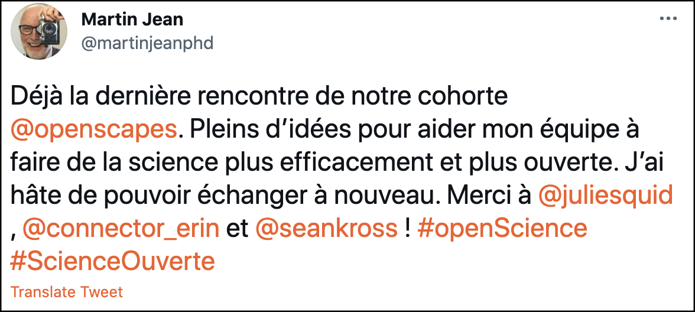
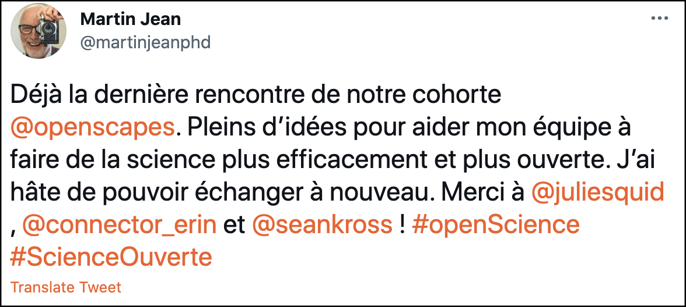

Introducing the CS&S Champions Cohort
The last Friday of June we celebrated the completion of our Code for Science and Society (CS&S) Science Champions Cohort. This was our first open call for the Champions program, meaning that Cohort teams weren’t all part of a specific community or group that was funding the Cohort. We proposed this open call to CS&S and wanted this to be an opportunity to focus on improving how we promote and support diversity, equity, and inclusion in Openscapes, since we wanted to see who would be interested if anyone could join.
We announced the opportunity via Twitter and our newsletter that we were leading a Cohort and waited to see how many teams would be interested (hoping there would be interest!) Thankfully, there was interest and this Cohort included eight environmental science teams from academic, nonprofit, government, and Tribal organizations in the US & Canada. They are a great group of teams and are described in detail below!
The CS&S Cohort was 2-months, with four sessions, like we piloted earlier this year with our NOAA NWFSC Cohort, and we continued putting to practice what we’ve been learning working with Tara Robertson to promote diversity, equity, and inclusion with open data science.
 

With this Cohort we continued to refine the Champions lesson series, and also welcomed guest speakers from previous Openscapes Champions cohorts to share their experiences and expertise. Dr. Jessica Couture taught about the importance of and strategies for metadata, describing different types of metadata: project-level (big picture stuff), object-level (data specific stuff), and file-level (file-specific stuff). In the final session, Dr. Gavin Fay shared how the Fay Lab has continued to practice Openscapes concepts over a year after their cohort, including offboarding the co-creator of the fab FayLab Lab Manual Ashleigh Novak when she got a new job with the Atlantic White Shark Conservancy.
“I’m in awe of how incredibly helpful this is and how this is not a conversation I’ve ever had with all the groups I’m in. I’ve heard metadata mentioned before but this is like a first day of orientation kind of thing. Incredibly helpful” — Ileana
Champions’ Pathways
While our 2-month cohorts go by so quickly, in our final session, each team shares what they’ve learned. Teams share their Pathway that frames where they’re starting and where they would like to go in terms of reproducibility, collaboration, communication, and culture. We provide a template that builds off of Table 1 from Lowndes et al. 2017, but we’ve added this fourth important “culture” category so teams can be explicit about their plans for diversity, equity, inclusion as well as reproducibility, collaboration, and communication. In the spirit of teamwork, it was neat to see how many teams co-presented their pathways, and provided plans for how they are moving from solo practices toward shared practices.
“There’a a lot to do [for open science], but now we can see what we need to do” — Nicola

It’s exciting to see how teams make it their own. One group described their pathway with Star Trek analogies (which was excellent, and a great complement to Star Wars 🤓!). They plan to focus on increasing the use of R code for automating and reproducing analyses, integrating with a forthcoming centralized data management system, and focusing on diversity, equity, and inclusion as they stabilize their team.
Moving toward Open Science Together
We were absolutely blown away by the teams in this cohort and how they were thinking about open science and diversity, equity, and inclusion in their work. Some themes that emerged across the pathways include:
Seaside Chats: Some big themes from the Champions’ Pathways were that the Seaside Chats really shine. Seaside Chats are regular meetings to talk about data – a space to identify and address shared needs and learn together, building a sense of community. Seaside Chats were where teams talked about onboarding new group members and creating the culture they want in their groups, and teams commented how they were great teaching opportunities. Seaside Chats are a powerful example of team science in action, where group members can develop technical and leadership skills and is a sustainable way for the team to continue to grow and adapt while also reducing burden on the group lead.
One group described how in addition to weekly lab meetings, they already have biweekly diversity, equity, inclusion, and justice (DEIJ) meetings and found Seaside Chats focused on open/data science helpful as well, saying:
“We didn’t know we had so much to talk about”
We discussed how to sustain Seaside Chat to continue skillbuilding alongside everything else, and other teams shared about setting up fun competitions to help people get comfortable using GitHub. Another team has a sign-up sheet for Seaside Chats and then whomever’s turn it is both runs the meeting but also structures the google doc, icebreakers, etc. One group was inspired by the in-person Tidy Tuesday Club at UCSB (started by 2019 Champion Allison Horst) and are thinking of starting one too.
Another team described how they have grown and changed physical locations during the pandemic, and that Seaside Chats have been an important way to help everyone learn together, develop shared norms, and get on the same page.
Accessing and sharing data was a big theme. Teams want to improve data sharing within their teams and collaborators – prior to having this be publicly available in a data repository – and are looking for ways to streamline this. Following a Data Carpentries workshop, one team described forming a lasting collaboration with the instructor who they are currently working with to streamline the way they access and analyze data. They’ve been building skills and momentum through virtual “R Chats” where they lead demos and follow-alongs for their community. Their next steps include increasing the use of GitHub and RMarkdown, expanding Seaside Chats, and sharing these stories with others.
Resilient teams and kinder science: After getting an introduction to GitHub from the browser (Issues and publication) in the second Openscapes session, one team used a Carpentries Github lesson to learn and practiced how to use GitHub collaboratively for version control. We thought this was a great complement to building shared skills using existing resources.
It was also exciting to see the ideas we discussed in the cohort being applied to field work – this also came up in the CSU COAST Cohort that we were leading concurrently with the CS&S Cohort, and is something we hadn’t heard before – we’re interested to support this thinking.
We loved seeing the Nye Lab’s new website with a statement saying: “WE AIM TO USE BOTH SCIENCE AND EMPATHY to approach environmental problems by understanding the dynamics of the natural world and how they can affect people and communities” and “OPEN DATA SCIENCE is the way in which we ensure our science is as state-of-the-art, transparent, reproducible and accessible as possible.” ❤️

Gratitude & Next steps
We are grateful to the teams for their engagement and dedication to moving toward Open, kinder science with their groups and to CS&S for supporting our work and allowing us to offer this open call. We are looking forward to seeing the progress that each group makes on their own pathway.
Going forward, we want to do one open call per year. We found this to be an important way to increase diversity of participants and for continued learning on all fronts. If you’re interested in supporting this, please get in touch!
Openscapes Champions CS&S Cohort teams
We have diverse teams from academic, nonprofit and government organizations in the US and Canada.
Oken Lab, University of California Davis. Dr. Kiva Oken’s research group studies quantitative fisheries ecology and management, population dynamics, and statistical methods in ecology. As a new lab, they are looking to establish good sustainable workflows. Having dabbled a bit in open science practices like github, they are excited to learn about it more formally and implement its full potential. They also hope open science can promote more intra- and inter-lab collaboration and avoid students and staff getting silo-ed on their own individual projects, as is common in academia. They are excited to share what they learn with other groups they are part of both on and off campus. https://okenk.github.io
Kenai Watershed Forum (Soldotna, Alaska). Benjamin Meyer, Maura Schumacher, and Galen Hecht help to lead watershed research, restoration, and education about the health of the Kenai River in Alaska. Collaborating with community partners including government, private, tribal, and other non-profit groups, Kenai Watershed Forum has galvanized major improvements in ecological management in the region, helping to protect water quality and wildlife and fish habitat for current and future generations. They have generated a large volume of high quality ecological and hydrological data over the organization’s twenty-four year history and are interested in implementing reproducible and open source methods going forward. www.kenaiwatershed.org
Environment and Climate Change Canada. Martin Jean and Alexandra Audet’s team leads freshwater quality, sediment, wetland and macroinvertebrate monitoring for the Canadian government. They are a strong example of data science in government and from outside the USA: for almost 10 years, they have developed skills on continuous improvement and quality assurance for scientific projects, and have realized that scientists spend a lot of time on data wrangling compared to data analysis, and are looking to increasingly support them with open science. https://www.canada.ca/en/environment-climate-change/services/freshwater-quality-monitoring
Williams Lab, University of South Florida. Dr. Nancy Williams’ research group studies the ocean’s role in the carbon cycle and in climate using biogeochemical sensors on autonomous vehicles, water sampling from ships, and computer model output. Over the past year of working remotely Williams has focused on building her “digital lab,” with a focus on switching her own workflow from MATLAB to Python, implementing version control and other open-science practices, and helping her students and researchers work this way too. Feeling a bit like she is reinventing the wheel and isolated, she is excited to learn about open resources and existing communities that are specifically for research groups trying to do more open science and accelerate the pace of ocean and climate research. She also sees the value in teaching these skills both to her advisees and to other students in the college so that they can maximize their own potential and feel more empowered to explore non-academic career paths. https://www.marine.usf.edu/nancy-williams
Tribes and the Exchange Network. Lydia Scheer (Program Manager for ITEP-NAU), Angie Reed (Water Resource Planner for Penobscot Indian Nation), Lisa Gover (Environmental Director for Campo Band of Mission Indians), Melinda Ronca-Battista (QA Specialist and Researcher for ITEP-NAU), and Natasha Fulton (Community Program Coordinator, ITEP-NAU) are part of the Tribes and the Exchange Network project that serves American Indian/Alaska Native government agencies and communities with the goal of building their capacity for managing the data and information they collect using digital systems and technology. They are working on solutions that are shareable, open, and scalable and can empower tribes with the information needed for reaching their environmental and natural resource management goals and objectives. Some of their team members conduct research and analysis, some work with the researchers and analysts to interpret and communicate the data and its value, and all work to bring an understanding of the benefits of sharing science-based information in balance with respecting tribal sovereignty to protect traditional knowledge. www.tribalexchangenetwork.org
Padilla-Gamiño Lab, University of Washington. Dr. Jacqueline Padilla-Gamiño’s research group studies the effects of climate change and microplastics on the ecophysiology of marine invertebrates and seaweeds. They are an ecophysiology team working at multiple levels of biological organization, working with gene expression, physiological and ecological data from the tropics and temperate regions, as well as the study of microplastics in coral reefs and seafood. They are interested in learning how open workflows can help make their science more efficient and accessible, but even more importantly in developing a mindset and research culture that embraces collaboration and inclusion. https://padilla-gaminolab.weebly.com
Nye Lab, University of North Carolina Chapel Hill (UNC-CH). Dr. Janet Nye’s research group studies fisheries ecology and oceanography, focused on the effects of climate change on marine ecosystems. Their group of multidisciplinary chemical, biological, physical oceanographers, and ecologists all use quantitative methods to answer questions about how climate change affects marine fisheries and ecosystems. Nye’s group is literally spread across the east coast – with members from Stony Brook University, main campus UNC-CH and UNC IMS, a remote field lab in eastern North Carolina, and are seeking open science practices to collaborate and share code within the distributed groups and the wider community. https://nye.unc.edu
WildCo, University of British Columbia. Dr. Cole Burton’s research group (the Wildlife Coexistence Lab, or WildCo) studies the applied ecology and conservation of terrestrial vertebrate biodiversity and specializes in wildlife survey tools like camera trapping. WildCo works with diverse partners to develop and apply rigorous wildlife sampling and analysis in support of improved conservation outcomes. The lab hopes to improve its capacity for leadership in open science and seeks to expand its training and influence to help increase the quality and availability of evidence to support sound decision making for wildlife management. https://wildlife.forestry.ubc.ca